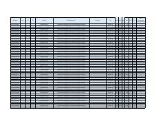

TSIbn Sino ixtisoslashtirilgan maktabiga kirish imtihonlari natijalari ro'yxati.
Ushbu hujjat Toshkent shahridagi Ibn Sino ixtisoslashtirilgan maktabiga kirish imtihonlari natijalarini o'z ichiga olgan ro'yxatdir. Unda o'quvchilarning ID raqamlari, fanlar bo'yicha to'plagan ballari va umumiy natijalari keltirilgan.